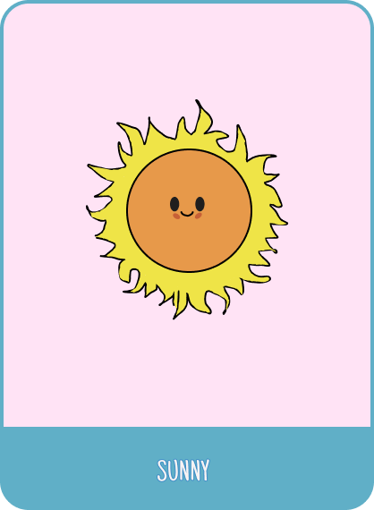
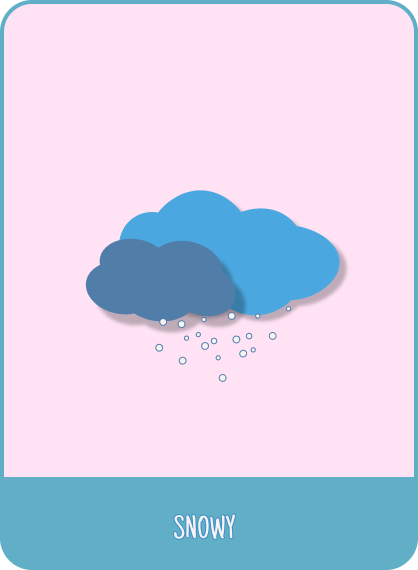

×
🌤️ Hava Durumu Kartları
Dünya başkentlerinin güncel hava durumunu keşfedin
🇹🇷 İstanbul
🇵🇱 Varşova
🇦🇹 Viyana
🇳🇱 Amsterdam
🇧🇪 Brüksel
🇳🇴 Oslo
🇩🇰 Kopenhag
🇸🇪 Stockholm
🇫🇷 Paris
🇮🇹 Roma
🇩🇪 Berlin
ğŸ‡ğŸ‡º Budapeşte
🇨🇿 Prag
Hava Durumunu Göster

Şehir Seçin
Hava Durumu
--°C
Hava durumunu görmek için yukarıdan bir şehir seçin ve butona tıklayın
Güneşli
Açık ve parlak hava
Bulutlu
Kapalı ve bulutlu hava
Yağmurlu
Yağışlı ve nemli hava

Karlı
Kar yağışlı ve soğuk hava